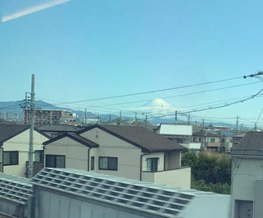
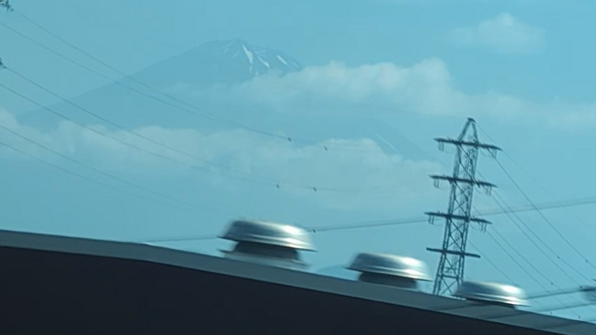
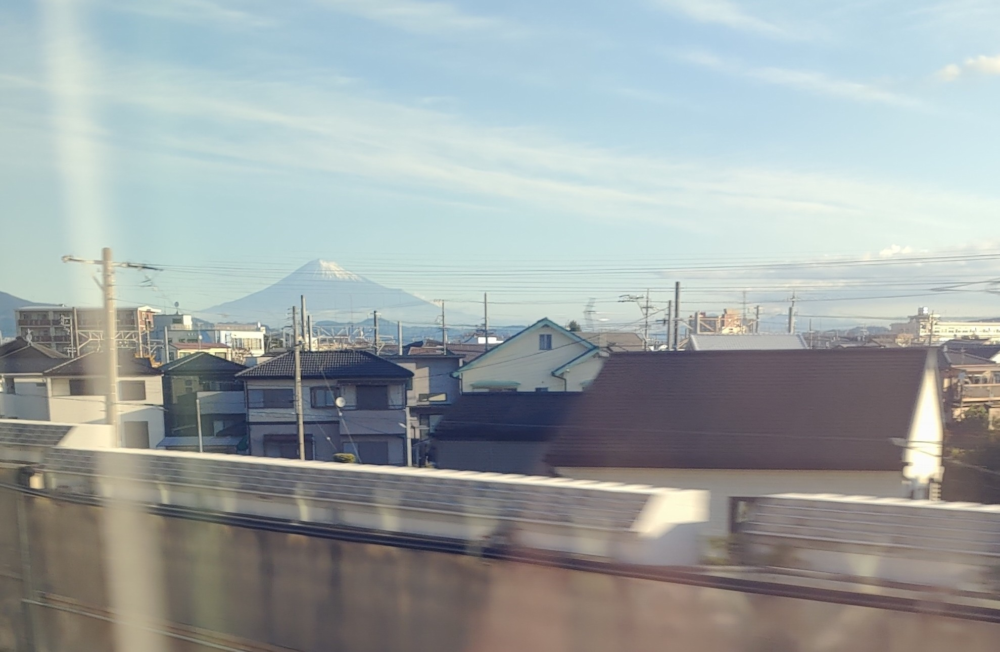

TOKAIDO SHINKANSEN WINDOW VIEW
左富士はいつ見える？座席側は？
海側A席に、28秒だけ富士山。

- 見える区間
- 新富士 → 静岡
- 座席側
- A席・海側
- タイミング
- 東京発のぞみ基準で約54分後
- 写真
- 3 枚
位置の目安
地図で見る航空写真で周辺の目印を確認できます。 乗車中はライブ地図で見る
左富士の見つけ方
ふつう富士山はE席のもの。でも線路がカーブするこの区間だけ、反対のA席側に富士山があらわれます。昔から「幸運の左富士」とも呼ばれる、短いごほうびのような車窓。見えるのはほんの数十秒。A席のあなたにも、ちゃんと出番があります。
東京から新大阪方面へ向かう場合は、新富士 → 静岡が近づいたらA席・海側の窓を少し早めに見てください。新大阪から東京方面へ向かう場合は、通過順が逆になります。
東海道新幹線の車窓としてのポイント
左富士は、富士山だけではない東海道新幹線の車窓を楽しむための見どころです。列車の速度が速いため、見える時間は短く、天気や座席位置によって見え方が変わります。
写真で見る左富士

